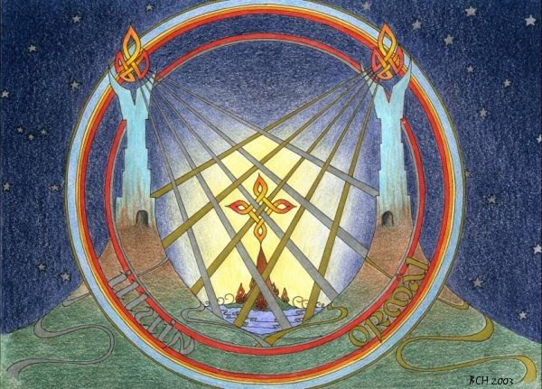

the valar saw that the world was in darkness so they lit the whole world with two lamps one in the north one in the suoth
melkor twists and changes animales into evil things
melkor destroys the lamps and arda becomes split in two aman in the west and middle earth in the south
melkor flees to the north of middle earth to his fortress utumno
the maiar make the land of valinor and make two trees that bring light to valinot but leave middle earth in darkness
